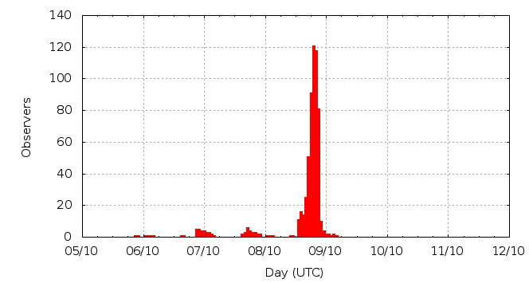

Activity profile
Activity profileThis page shows automated results of the Draconids 2011, based on visual observations by volunteers astronomers collected through the report form of the International Meteor Organization (IMO). The information on this page is generated automatically; for scientific use please refer to manual analyses published in scientific journals (such as WGN). Send your feedback regarding this page to Geert Barentsen.
Page contents:
8 October in detail (NEW)Page generated: 2012 January 2 at 13:05 UTC.
The graph below shows the ZHR (Zenithal Hourly Rate), which is the number of meteors an observer would see under a very dark sky with the radiant of the shower in zenith.
ZHRmax = 304 based on 6948 Draconids reported in 1807 intervals, assuming population index r = 2.8

| Time (UTC) | Solarlon | nINT | nDRA | ZHR | Particle density | |
|---|---|---|---|---|---|---|
| 2011-10-06 03:00 | 192.358 | 1 | 0 | 5 | ±5 | 51 / 109·km3 |
| 2011-10-06 21:01 | 193.098 | 6 | 1 | 1 | ±1 | 10 / 109·km3 |
| 2011-10-07 01:01 | 193.262 | 18 | 5 | 2 | ±1 | 20 / 109·km3 |
| 2011-10-07 20:01 | 194.043 | 30 | 11 | 7 | ±2 | 72 / 109·km3 |
| 2011-10-08 02:42 | 194.317 | 4 | 0 | 5 | ±5 | 51 / 109·km3 |
| 2011-10-08 14:30 | 194.802 | 5 | 20 | 54 | ±12 | 552 / 109·km3 |
| 2011-10-08 15:21 | 194.838 | 7 | 20 | 31 | ±7 | 317 / 109·km3 |
| 2011-10-08 15:59 | 194.864 | 9 | 21 | 23 | ±5 | 235 / 109·km3 |
| 2011-10-08 16:30 | 194.885 | 7 | 20 | 22 | ±5 | 225 / 109·km3 |
| 2011-10-08 16:51 | 194.899 | 13 | 20 | 33 | ±7 | 338 / 109·km3 |
| 2011-10-08 17:19 | 194.918 | 11 | 20 | 38 | ±8 | 389 / 109·km3 |
| 2011-10-08 17:33 | 194.928 | 12 | 35 | 32 | ±5 | 327 / 109·km3 |
| 2011-10-08 17:44 | 194.936 | 18 | 24 | 49 | ±10 | 501 / 109·km3 |
| 2011-10-08 17:55 | 194.943 | 20 | 24 | 49 | ±10 | 501 / 109·km3 |
| 2011-10-08 18:05 | 194.950 | 25 | 52 | 62 | ±9 | 634 / 109·km3 |
| 2011-10-08 18:15 | 194.957 | 26 | 58 | 58 | ±8 | 593 / 109·km3 |
| 2011-10-08 18:27 | 194.965 | 50 | 118 | 35 | ±3 | 358 / 109·km3 |
| 2011-10-08 18:36 | 194.971 | 48 | 112 | 86 | ±8 | 880 / 109·km3 |
| 2011-10-08 18:45 | 194.978 | 53 | 102 | 79 | ±8 | 808 / 109·km3 |
| 2011-10-08 18:55 | 194.984 | 52 | 164 | 81 | ±6 | 829 / 109·km3 |
| 2011-10-08 19:06 | 194.992 | 60 | 191 | 87 | ±6 | 890 / 109·km3 |
| 2011-10-08 19:16 | 194.999 | 79 | 268 | 114 | ±7 | 1166 / 109·km3 |
| 2011-10-08 19:26 | 195.006 | 91 | 390 | 95 | ±5 | 972 / 109·km3 |
| 2011-10-08 19:36 | 195.012 | 96 | 418 | 134 | ±7 | 1371 / 109·km3 |
| 2011-10-08 19:46 | 195.019 | 117 | 501 | 198 | ±9 | 2025 / 109·km3 |
| 2011-10-08 19:55 | 195.026 | 117 | 575 | 230 | ±10 | 2353 / 109·km3 |
| 2011-10-08 20:05 | 195.033 | 131 | 874 | 277 | ±9 | 2833 / 109·km3 |
| 2011-10-08 20:15 | 195.039 | 129 | 873 | 304 | ±10 | 3110 / 109·km3 |
| 2011-10-08 20:25 | 195.046 | 106 | 600 | 190 | ±8 | 1944 / 109·km3 |
| 2011-10-08 20:35 | 195.053 | 95 | 402 | 161 | ±8 | 1647 / 109·km3 |
| 2011-10-08 20:45 | 195.060 | 84 | 381 | 130 | ±7 | 1330 / 109·km3 |
| 2011-10-08 20:55 | 195.067 | 77 | 238 | 105 | ±7 | 1074 / 109·km3 |
| 2011-10-08 21:05 | 195.074 | 57 | 138 | 79 | ±7 | 808 / 109·km3 |
| 2011-10-08 21:15 | 195.080 | 48 | 118 | 68 | ±6 | 696 / 109·km3 |
| 2011-10-08 21:25 | 195.087 | 37 | 47 | 40 | ±6 | 409 / 109·km3 |
| 2011-10-08 21:35 | 195.094 | 19 | 40 | 72 | ±11 | 736 / 109·km3 |
| 2011-10-08 21:45 | 195.101 | 11 | 27 | 59 | ±11 | 604 / 109·km3 |
| 2011-10-08 21:59 | 195.111 | 13 | 20 | 50 | ±11 | 511 / 109·km3 |
| 2011-10-08 23:55 | 195.190 | 24 | 19 | 26 | ±6 | 266 / 109·km3 |
| 2011-10-09 04:35 | 195.382 | 1 | 1 | 53 | ±37 | 542 / 109·km3 |
The reported intervals are automatically added together into the bins shown above, based on the number of meteors and the distribution of the intervals. For each bin, the following parameters are computed:

| Time (UTC) | Solarlon | nINT | nDRA | ZHR | Particle density | |
|---|---|---|---|---|---|---|
| 2011-10-08 16:29 | 194.884 | 7 | 20 | 20 | ±4 | 205 / 109·km3 |
| 2011-10-08 16:38 | 194.890 | 10 | 24 | 25 | ±5 | 256 / 109·km3 |
| 2011-10-08 17:03 | 194.908 | 12 | 10 | 51 | ±15 | 522 / 109·km3 |
| 2011-10-08 17:26 | 194.923 | 7 | 24 | 50 | ±10 | 511 / 109·km3 |
| 2011-10-08 17:31 | 194.926 | 6 | 25 | 25 | ±5 | 256 / 109·km3 |
| 2011-10-08 17:40 | 194.933 | 13 | 20 | 52 | ±11 | 532 / 109·km3 |
| 2011-10-08 17:51 | 194.940 | 25 | 21 | 51 | ±11 | 522 / 109·km3 |
| 2011-10-08 18:01 | 194.947 | 14 | 20 | 51 | ±11 | 522 / 109·km3 |
| 2011-10-08 18:05 | 194.950 | 13 | 32 | 61 | ±11 | 624 / 109·km3 |
| 2011-10-08 18:11 | 194.954 | 10 | 21 | 72 | ±15 | 736 / 109·km3 |
| 2011-10-08 18:16 | 194.958 | 14 | 39 | 68 | ±11 | 696 / 109·km3 |
| 2011-10-08 18:21 | 194.961 | 16 | 24 | 37 | ±7 | 378 / 109·km3 |
| 2011-10-08 18:27 | 194.965 | 20 | 26 | 52 | ±10 | 532 / 109·km3 |
| 2011-10-08 18:31 | 194.968 | 34 | 106 | 38 | ±4 | 389 / 109·km3 |
| 2011-10-08 18:36 | 194.971 | 22 | 39 | 110 | ±17 | 1125 / 109·km3 |
| 2011-10-08 18:41 | 194.975 | 29 | 74 | 74 | ±9 | 757 / 109·km3 |
| 2011-10-08 18:46 | 194.978 | 31 | 63 | 80 | ±10 | 818 / 109·km3 |
| 2011-10-08 18:52 | 194.982 | 28 | 80 | 74 | ±8 | 757 / 109·km3 |
| 2011-10-08 18:57 | 194.985 | 22 | 64 | 85 | ±11 | 869 / 109·km3 |
| 2011-10-08 19:02 | 194.989 | 24 | 73 | 97 | ±11 | 992 / 109·km3 |
| 2011-10-08 19:06 | 194.992 | 29 | 103 | 92 | ±9 | 941 / 109·km3 |
| 2011-10-08 19:11 | 194.996 | 37 | 100 | 92 | ±9 | 941 / 109·km3 |
| 2011-10-08 19:16 | 194.999 | 43 | 149 | 124 | ±10 | 1268 / 109·km3 |
| 2011-10-08 19:21 | 195.002 | 37 | 160 | 118 | ±9 | 1207 / 109·km3 |
| 2011-10-08 19:26 | 195.006 | 44 | 174 | 119 | ±9 | 1217 / 109·km3 |
| 2011-10-08 19:31 | 195.009 | 49 | 224 | 89 | ±6 | 910 / 109·km3 |
| 2011-10-08 19:36 | 195.013 | 53 | 231 | 164 | ±11 | 1678 / 109·km3 |
| 2011-10-08 19:42 | 195.016 | 55 | 251 | 131 | ±8 | 1340 / 109·km3 |
| 2011-10-08 19:47 | 195.020 | 56 | 212 | 173 | ±12 | 1770 / 109·km3 |
| 2011-10-08 19:52 | 195.023 | 61 | 316 | 236 | ±13 | 2414 / 109·km3 |
| 2011-10-08 19:56 | 195.026 | 63 | 262 | 198 | ±12 | 2025 / 109·km3 |
| 2011-10-08 20:02 | 195.030 | 64 | 381 | 267 | ±14 | 2731 / 109·km3 |
| 2011-10-08 20:07 | 195.034 | 68 | 521 | 290 | ±13 | 2966 / 109·km3 |
| 2011-10-08 20:12 | 195.037 | 66 | 444 | 306 | ±15 | 3130 / 109·km3 |
| 2011-10-08 20:17 | 195.040 | 66 | 412 | 293 | ±14 | 2997 / 109·km3 |
| 2011-10-08 20:22 | 195.044 | 59 | 416 | 254 | ±12 | 2598 / 109·km3 |
| 2011-10-08 20:26 | 195.047 | 49 | 233 | 153 | ±10 | 1565 / 109·km3 |
| 2011-10-08 20:32 | 195.051 | 48 | 227 | 186 | ±12 | 1903 / 109·km3 |
| 2011-10-08 20:36 | 195.054 | 46 | 199 | 146 | ±10 | 1493 / 109·km3 |
| 2011-10-08 20:42 | 195.058 | 41 | 176 | 163 | ±12 | 1667 / 109·km3 |
| 2011-10-08 20:46 | 195.060 | 44 | 215 | 119 | ±8 | 1217 / 109·km3 |
| 2011-10-08 20:52 | 195.064 | 36 | 99 | 109 | ±11 | 1115 / 109·km3 |
| 2011-10-08 20:56 | 195.067 | 43 | 139 | 104 | ±9 | 1064 / 109·km3 |
| 2011-10-08 21:02 | 195.071 | 23 | 70 | 96 | ±11 | 982 / 109·km3 |
| 2011-10-08 21:06 | 195.074 | 35 | 80 | 71 | ±8 | 726 / 109·km3 |
| 2011-10-08 21:12 | 195.078 | 21 | 58 | 95 | ±12 | 972 / 109·km3 |
| 2011-10-08 21:15 | 195.081 | 26 | 58 | 56 | ±7 | 573 / 109·km3 |
| 2011-10-08 21:21 | 195.085 | 17 | 29 | 77 | ±14 | 788 / 109·km3 |
| 2011-10-08 21:25 | 195.087 | 22 | 23 | 27 | ±6 | 276 / 109·km3 |
| 2011-10-08 21:32 | 195.092 | 14 | 33 | 91 | ±16 | 931 / 109·km3 |
| 2011-10-08 21:38 | 195.096 | 12 | 20 | 52 | ±11 | 532 / 109·km3 |
| 2011-10-08 21:45 | 195.101 | 7 | 20 | 63 | ±14 | 644 / 109·km3 |
| 2011-10-08 21:57 | 195.109 | 13 | 20 | 49 | ±11 | 501 / 109·km3 |
| 2011-10-08 22:18 | 195.124 | 10 | 8 | 36 | ±12 | 368 / 109·km3 |
| 2011-10-08 22:53 | 195.147 | 6 | 5 | 33 | ±13 | 338 / 109·km3 |
| 2011-10-08 23:14 | 195.162 | 1 | 2 | 104 | ±60 | 1064 / 109·km3 |
Data has been received from 128 observers in 28 countries. Thank you for your efforts!
Note: click on the map for an interactive version.

| Observer | Country | Teff | nDRA |
|---|---|---|---|
| Ioan Agavriloaiei | Romania | 1.67h | 0 |
| Salvador Aguirre | Mexico | 7.83h | 2 |
| Juan Carlos Alcazar Fernandez | Spain | 2.20h | 42 |
| Karl Antier | France | 4.88h | 157 |
| Rainer Arlt | Germany | 1.65h | 63 |
| Jure Atanackov | Slovenia | 3.35h | 238 |
| Luc Bastiaens | Belgium | 2.78h | 98 |
| Zora Beljic | Serbia | 1.96h | 21 |
| Orlando Benítez Sánchez | Spain | 2.20h | 125 |
| Felix Bettonvil | Netherlands | 1.25h | 2 |
| Suresh Bhattarai | Nepal | 2.00h | 4 |
| Jens Briesemeister | Germany | 2.40h | 62 |
| Stéphane Bruchet | France | 1.54h | 28 |
| Students Bsu | Russia | 81.26h | 1170 |
| Vladimir Burgic | Serbia | 1.33h | 0 |
| Rafael Campillos Ladero | Spain | 1.00h | 46 |
| Jakub Cerny | Czech Republic | 1.88h | 100 |
| Marcin Chwa?a | Poland | 0.65h | 8 |
| Filip Colakovic | Serbia | 1.33h | 7 |
| Lorenzo Comolli | Italy | 2.48h | 62 |
| Ilie Cosovanu | Romania | 0.42h | 2 |
| Håkon Dahle | Norway | 2.11h | 107 |
| Anderson Dantas | Brazil | 2.91h | 2 |
| Luigi D'argliano | Italy | 0.98h | 37 |
| C B Devgun Space | India | 4.00h | 58 |
| Jose Vicente Diaz Martinez | Spain | 2.33h | 16 |
| Sietse Dijkstra | Netherlands | 3.57h | 99 |
| Jan Ebr | Czech Republic | 1.64h | 91 |
| Ivana Ebrova | Czech Republic | 1.88h | 78 |
| Frank Enzlein | Germany | 2.21h | 73 |
| Tomasz Fajfer | Poland | 1.00h | 25 |
| Reyhaneh Falah | Iran | 2.73h | 28 |
| Richard Fleet | United Kingdom | 0.65h | 22 |
| Stela Frencheva | Germany | 0.70h | 44 |
| Stefan Fuks | Serbia | 6.20h | 13 |
| Kai Frode Gaarder | Norway | 2.99h | 172 |
| Sylvie Gorkova | Czech Republic | 2.99h | 49 |
| Mitja Govedi? | Slovenia | 1.00h | 46 |
| Matthias Growe | Germany | 1.69h | 97 |
| Piotr Guzik | Poland | 1.15h | 79 |
| Shy Halatzi | Israel | 4.07h | 51 |
| Oliver Hanke | Germany | 2.02h | 58 |
| Amir Hasanzadeh | Iran | 0.81h | 4 |
| Leo Holmberg | Finland | 1.53h | 45 |
| Kamil Hornoch | Czech Republic | 4.83h | 121 |
| Jan Horsky | Czech Republic | 1.56h | 63 |
| Antal Igaz | Hungary | 2.13h | 51 |
| Jelisaveta Ilic | Serbia | 4.01h | 10 |
| Nevena Ilic | Serbia | 3.74h | 24 |
| Carl Johannink | Germany | 1.72h | 92 |
| Javor Kac | Slovenia | 3.57h | 137 |
| Timo Karhula | Sweden | 0.75h | 25 |
| Roy Keeris | Netherlands | 0.72h | 18 |
| Stanislav Korotkiy | Russia | 3.38h | 58 |
| Janez Kos | Slovenia | 2.76h | 167 |
| Roman Kostenko | Ukraine | 4.85h | 39 |
| Jakub Koukal | Czech Republic | 2.08h | 110 |
| Roman Kovalyk | Italy | 0.68h | 2 |
| Martin Krueger | Germany | 1.00h | 15 |
| Andrey Kychyzhyyev | Ukraine | 4.33h | 18 |
| Marina Kychyzhyyeva | Ukraine | 4.78h | 38 |
| Jens Lacorne | France | 2.00h | 35 |
| Marco Langbroek | Netherlands | 2.77h | 248 |
| Mariusz Lemiecha | Poland | 2.99h | 113 |
| Anna Levin | Israel | 2.71h | 2 |
| Anna Levina | Israel | 5.16h | 38 |
| Hartwig Luethen | Germany | 2.55h | 71 |
| Jose Luis Maestre Garcia | Spain | 1.95h | 65 |
| Alexandr Maidik | Ukraine | 6.00h | 9 |
| Maria Makarova | Ukraine | 4.02h | 16 |
| Veikko Mäkelä | Finland | 0.26h | 1 |
| Alexander Manannikov | Russia | 0.90h | 9 |
| Dasha Maskovay | Ukraine | 4.28h | 15 |
| Aleksandar Matic | Serbia | 2.02h | 24 |
| Ivo Micek | Czech Republic | 0.61h | 30 |
| Marco Micheli | Italy | 0.50h | 30 |
| Maslov Mikhail | Russia | 1.97h | 0 |
| Jose Carlos Millan | Spain | 2.17h | 29 |
| Artem Mirgorod | Ukraine | 2.05h | 27 |
| Jakub Mirocha | Poland | 1.72h | 41 |
| Koen Miskotte | Netherlands | 0.94h | 11 |
| Sirko Molau | Germany | 2.16h | 72 |
| Maciej Myszkiewicz | Poland | 5.43h | 93 |
| Nikolay Nikolaev | Russia | 2.00h | 18 |
| Artyom Novichonok | Russia | 1.33h | 9 |
| Francisco Ocaña González | Spain | 1.70h | 56 |
| Peter I. Papics | Hungary | 0.52h | 46 |
| Lovro Pavletic | Croatia | 1.58h | 49 |
| Anna Pavlova | Ukraine | 3.34h | 25 |
| Konstantin Polyakov | Russia | 4.45h | 14 |
| Sasha Prokofyev | Russia | 0.22h | 1 |
| Rok Pucer | Slovenia | 1.80h | 46 |
| Jatin Rathod | India | 0.46h | 5 |
| Ella Ratz | Israel | 2.83h | 15 |
| Jurgen Rendtel | Germany | 3.19h | 90 |
| Raluca Rufu | Israel | 2.50h | 26 |
| Miguel Santana Gutiérrez | Spain | 2.03h | 43 |
| Krisztian Sarneczky | Hungary | 2.13h | 47 |
| Mikiya Sato | Japan | 2.00h | 19 |
| Tomoko Sato | Japan | 2.00h | 10 |
| Branislav Savic | Serbia | 6.32h | 32 |
| Christian Schmiel | Germany | 1.37h | 68 |
| Alex Scholten | Netherlands | 0.85h | 31 |
| Kai Schultze | Germany | 3.67h | 83 |
| Andrzej Skoczewski | Poland | 2.46h | 52 |
| Yaser Soleimani | Iran | 3.25h | 22 |
| Ulrich Sperberg | Germany | 2.92h | 58 |
| Israel Tejera Falcon | Spain | 2.03h | 72 |
| Seityagiya Terlekchi | Ukraine | 1.87h | 7 |
| Snezana Todorovic | Serbia | 5.53h | 18 |
| Yasuhiro Tonomura | Japan | 2.40h | 6 |
| Josep M. Trigo-rodríguez | Spain | 1.49h | 68 |
| Blanca Troughton Luque | Spain | 0.93h | 11 |
| Shigeo Uchiyama | Japan | 1.99h | 17 |
| Michel Vandeputte | Belgium | 2.99h | 250 |
| Wienie Van Der Oord | Israel | 1.74h | 3 |
| Peter Van Leuteren | Netherlands | 3.33h | 153 |
| Birgit Van Opstal | Belgium | 2.68h | 76 |
| Glynis Van Uden | Netherlands | 0.34h | 1 |
| Jovan Vasiljevic | Serbia | 1.33h | 1 |
| Marina Vlajnic | Serbia | 1.58h | 10 |
| Marta Volkova | Ukraine | 2.67h | 15 |
| William Watson | United States | 1.13h | 2 |
| Mariusz Wisniewski | Poland | 2.78h | 91 |
| A.o. Woost | Germany | 3.68h | 101 |
| Ilkka Yrjölä | Finland | 1.03h | 23 |
| Raziyeh Zahedi | Iran | 1.50h | 10 |
| Weizhou Zeng | China | 1.02h | 0 |
| Tianwei Zhang | China | 1.25h | 4 |
| Peter Zimnikoval | Slovakia | 1.17h | 16 |
Create your own analysis. The files below can be opened using Excel:
dra2011_rate.csv (number of meteors per interval per observer)
dra2011_magn.csv (number of meteors per magnitude bin per observer)
The information on this page may be distributed freely provided credit is given to the International Meteor Organization (IMO) and, when possible, to the individual observers. The computer facilities to generate this page are provided by ESA/RSSD and Armagh Observatory.
References: